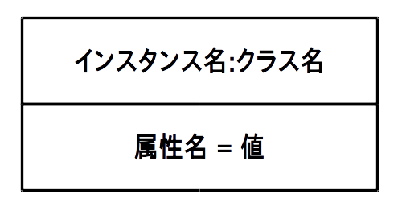
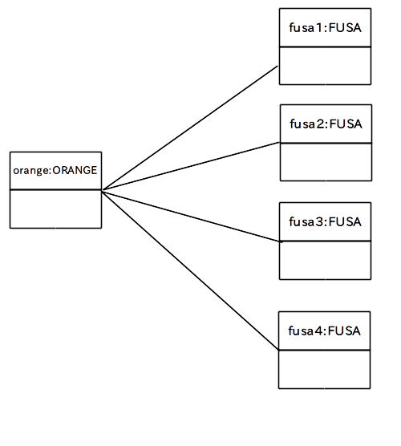

今度は「関連」の一種である「集約」について学びます。
「集約」は「あるクラスが他のクラスを所有している」「他のクラスから構成されている」などの主従関係を明確に示すために使われます。
「集約」をクラス図で表す場合は所有する側のクラスに中抜きのダイヤマークを付けます。

この関係を英語で書くと
A has a B : A は B を持っている
となりますので、「集約」は別名「has a 関係」と言います。
例えば、前のページで挙げた関連の例
は「1 個のみかんは房を 4 個持っている」という解釈でしたので、まさに「集約」を意味しています。
従って中抜きダイヤマークを使って明確に「集約」を表すことができます。

なお、中抜きダイヤマークが多いとクラス図が見辛くなるので、主従関係が明らかな場合は中抜きダイヤマークを省略して「関連」だけで済ます場合も多いです。
どの状況では「関連」を使って、どの状況では「集約」を使うべきかという具体的な決まりは特にありませんので、自分でやり易いやり方を見つけたり、所属するチームのやり方に従って下さい。